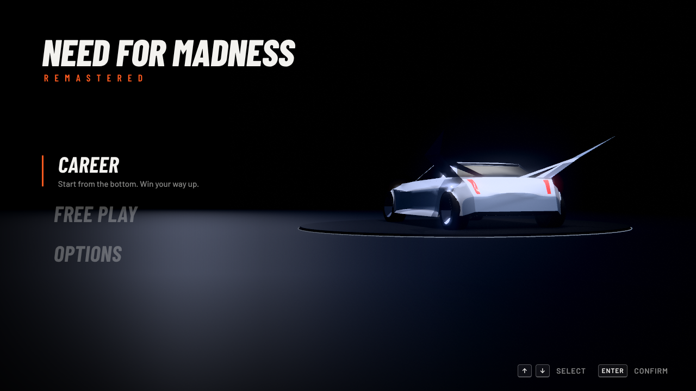
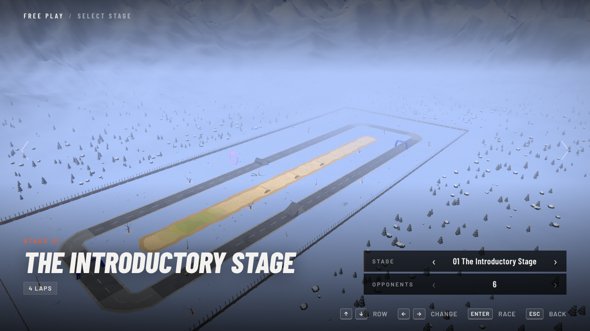

Ported from the original Java

52 cars
+ community cars

Pick a stage. Pick a fight.

Go. Crash. Repeat.
Need for
Madness
Madness
REMASTERED
Rebuilt.
Still mad.
Still mad.
CAREER · FREE PLAY · ONLINE